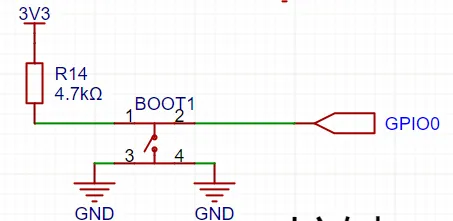

<!DOCTYPE lake>
<p data-lake-id="uad9ee29a" id="uad9ee29a" style="text-align: center"><a class="yuque-card-link" href="https://docs.espressif.com/projects/esp-idf/zh_CN/v5.3.2/esp32s3/api-reference/peripherals/gpio.html#id2" rel="noopener noreferrer" target="_blank">bookmarkInline：bookmarkInline</a></p><h3 data-lake-id="QNZEi" id="QNZEi"><span data-lake-id="u1bb19ea7" id="u1bb19ea7">示例代码</span></h3><p data-lake-id="uf04c50b1" id="uf04c50b1"><span data-lake-id="u5e1123a7" id="u5e1123a7">参考代码：Espressif\frameworks\esp-idf-v5.3.1\examples\peripherals\gpio\generic_gpio\main</span></p><span class="yuque-card-unsupported">[codeblock]</span>